seeing eye dogs
A rebrand for Seeing Eye Dogs, a subdivision of Vision Australia. The rebrand makes the organisation's purpose more distinct while still retaining a connection to its parent charity.
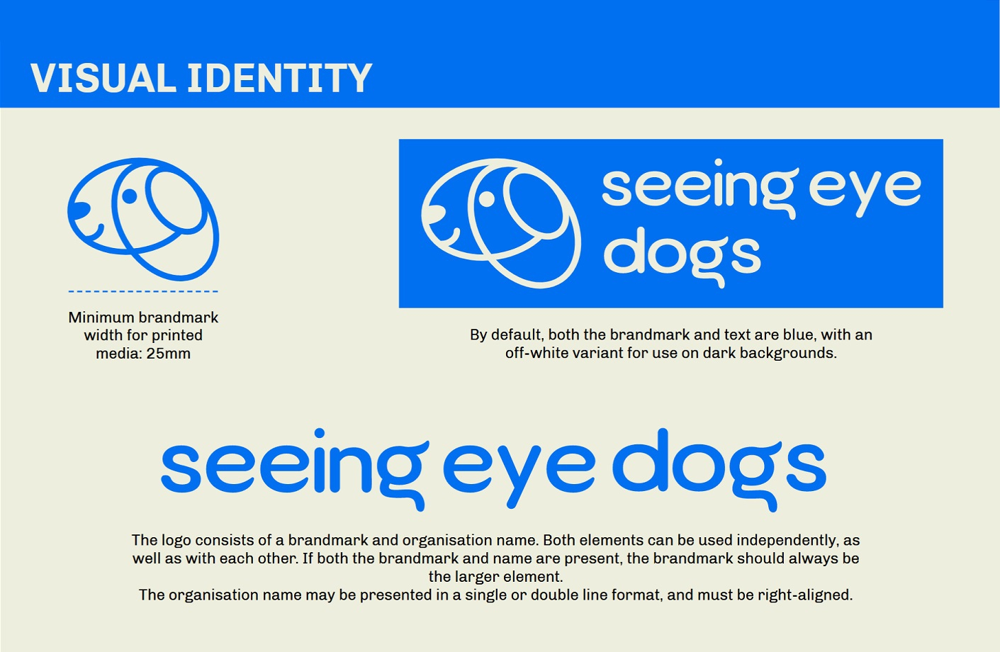 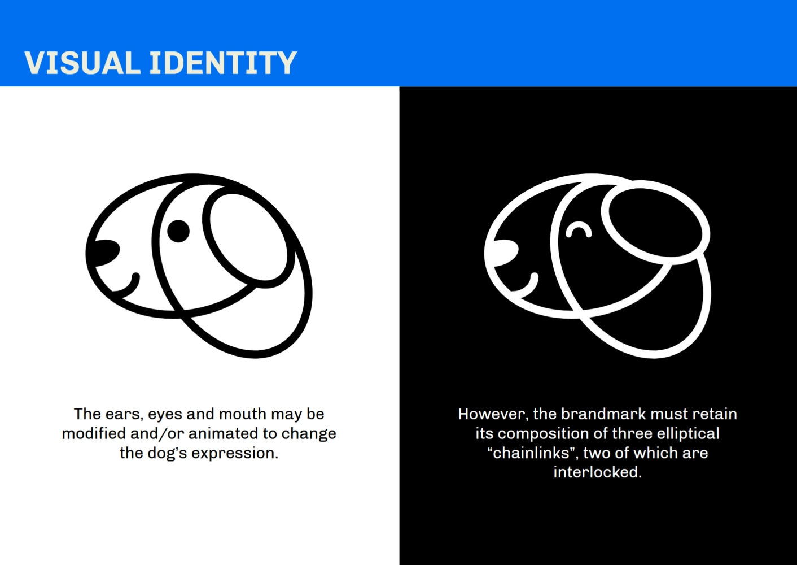 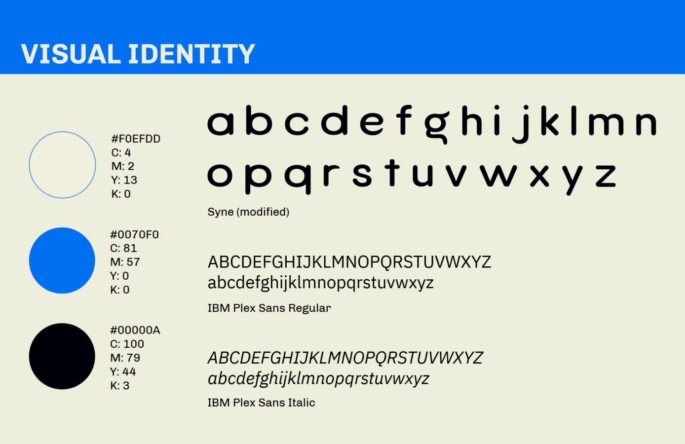 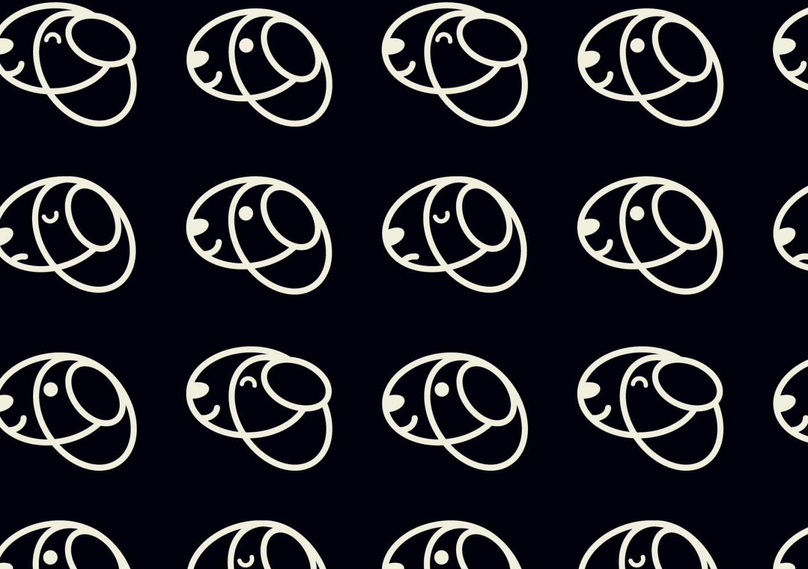 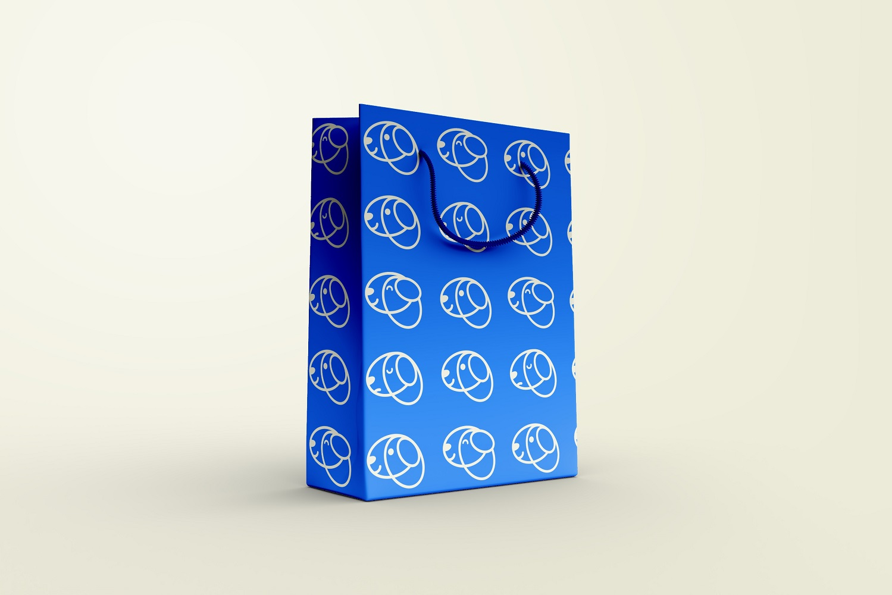 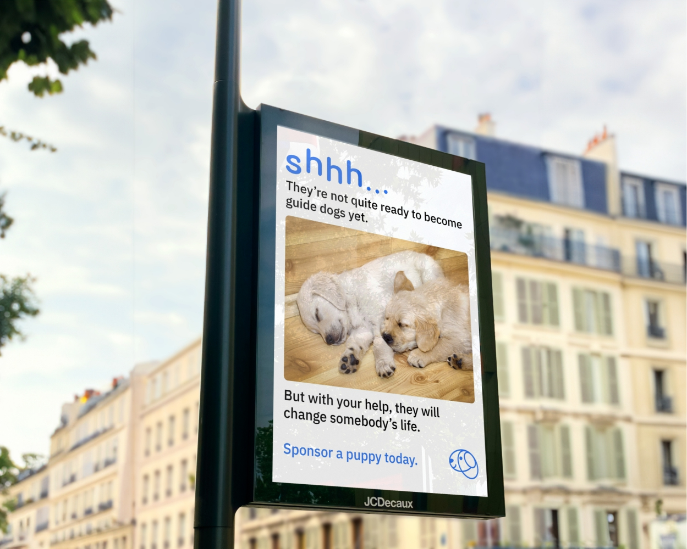 go backA rebrand for Seeing Eye Dogs, a subdivision of Vision Australia. The rebrand makes the organisation's purpose more distinct while still retaining a connection to its parent charity.
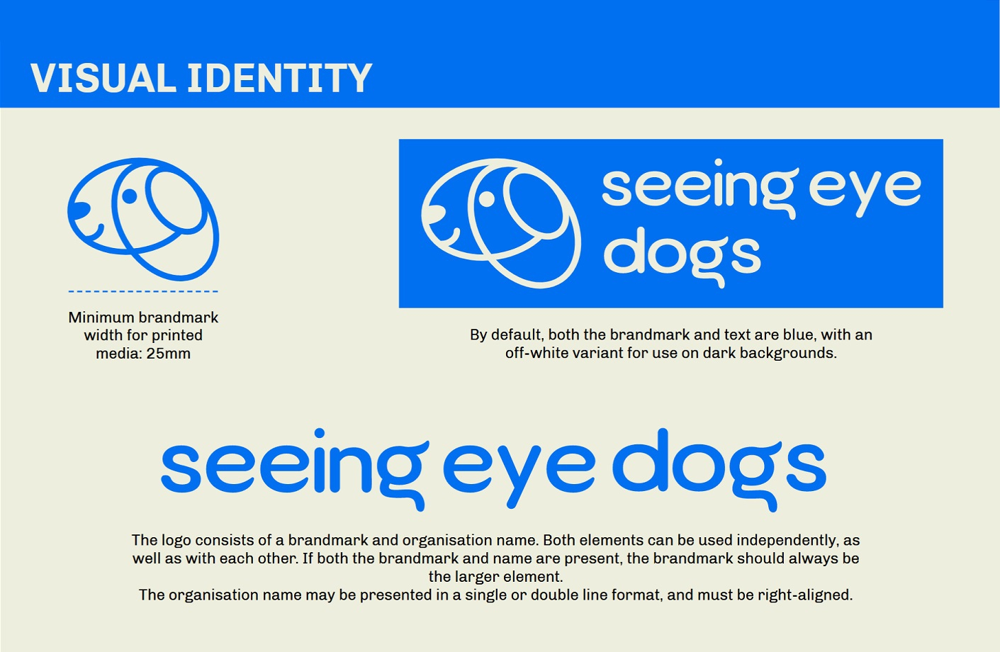 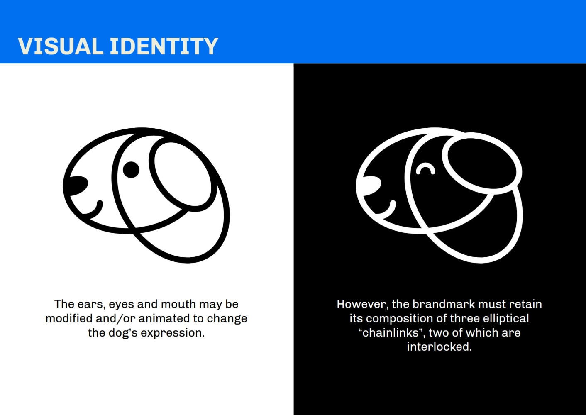 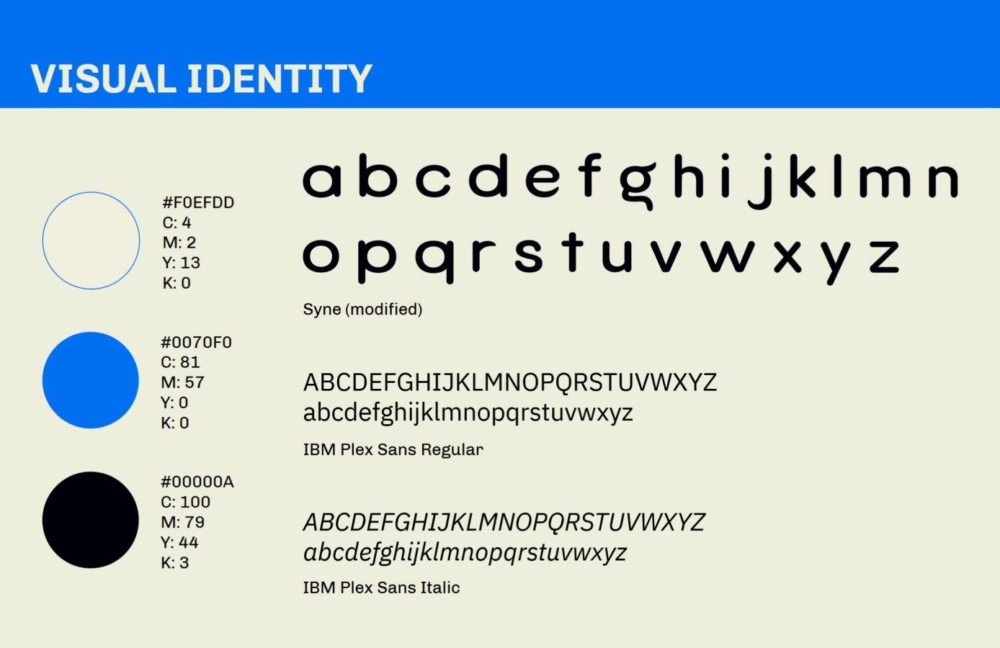 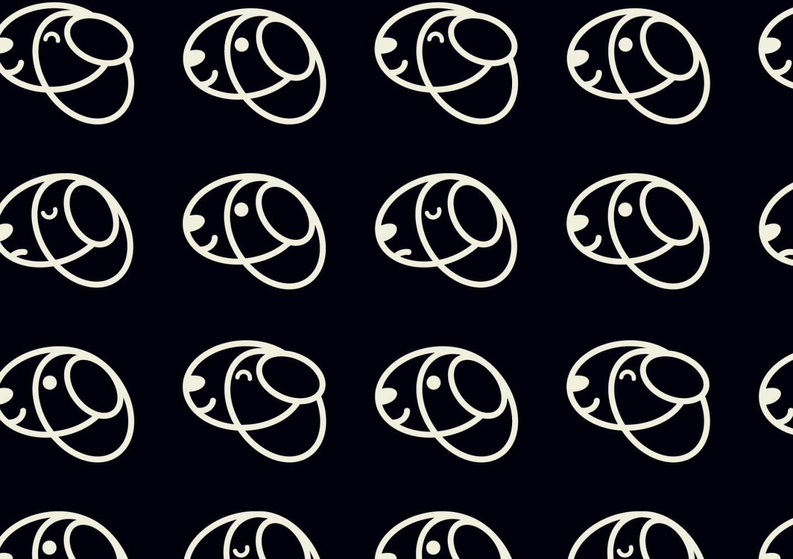 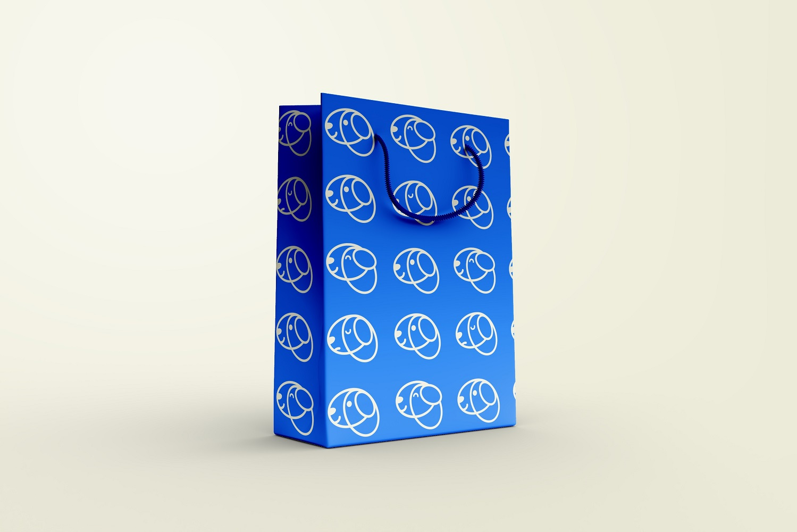 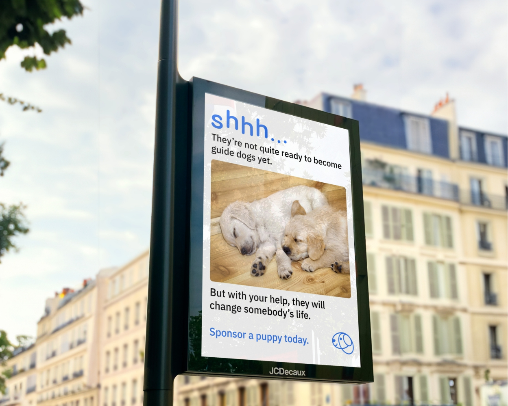 go back